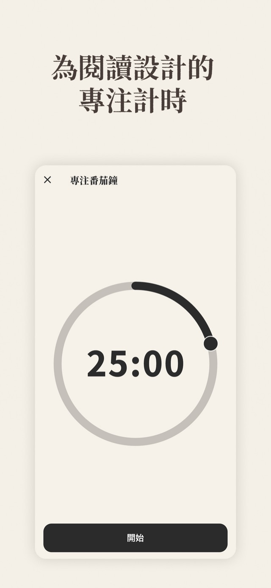
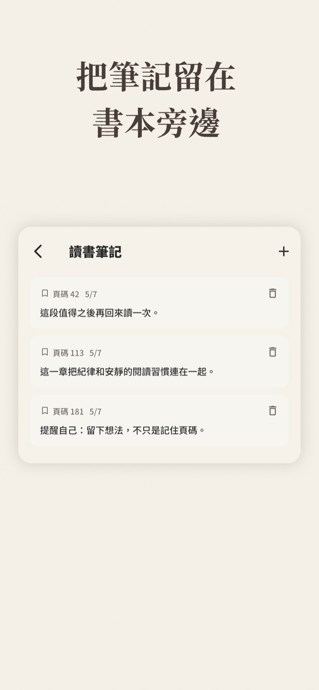
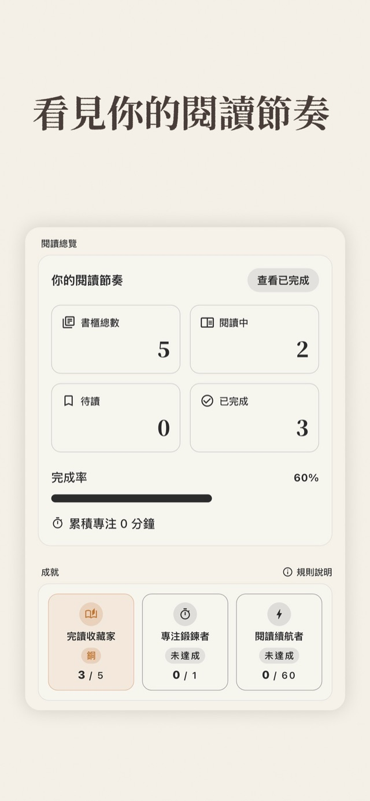
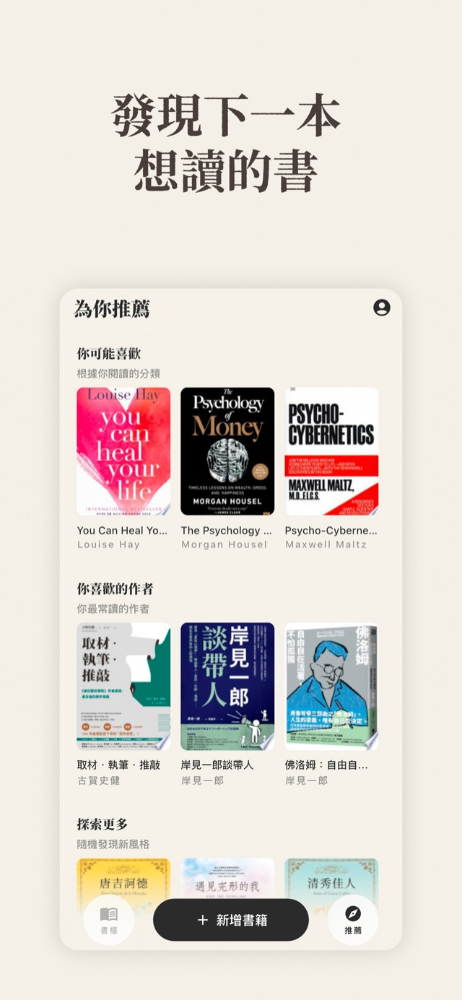
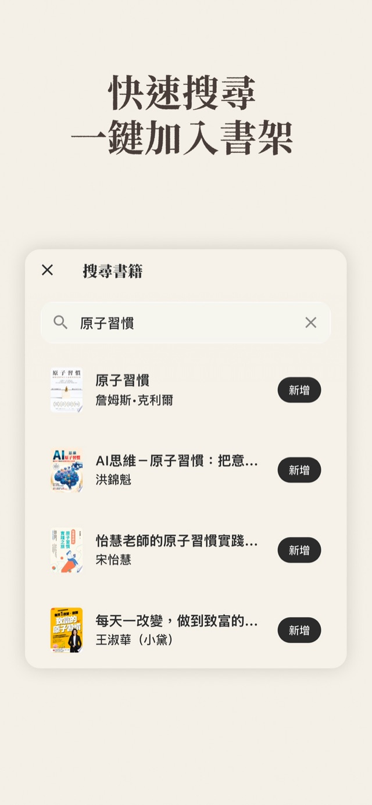

Mish · 讀書筆記與閱讀紀錄
不催你、不評判，安靜陪你讀完每一本書
Mish 把書櫃、書單、專注計時、筆記與統計放在同一個安靜的地方。你讀多快、讀多少，都由你決定——Mish 只負責幫你記得。
免費下載 · iOS · 不用註冊也能開始





核心功能
閱讀生活需要的，都在同一個地方
書櫃隨你的節奏整理
閱讀中、待讀、已完成，加上還沒入手的想讀清單。搜尋書名或 ISBN 一鍵加入，支援臺灣與日文書目資料。
為閱讀設計的專注計時
番茄鐘與累積閱讀時間，幫你看見自己的閱讀節奏——是節奏，不是 KPI。
筆記留在書本旁邊
每一則筆記都掛在對應的書與頁碼下，回顧時想法與出處都在。
發現下一本想讀的書
依你的書櫃推薦分類新書與常讀作者；每本書提供對應地區書店的購書連結，找不到的書也能直接回報給我們。
使用方式
不用註冊也能開始
打開 Mish 就能直接建立書櫃，先試用再決定。登入帳號（Email、Google 或 Apple）後，書櫃、筆記與紀錄會同步到雲端，換裝置也不會不見。免費版與 Mish Pro 的功能差異與方案價格，以 App 內顯示為準。
常見問題
FAQ
Mish 是免費的嗎？
可以免費下載並使用核心功能。部分進階功能（例如進階統計、閱讀目標、匯出）屬於 Mish Pro，方案與價格以 App 內顯示為準。免費版會顯示少量廣告，Pro 版移除廣告。
一定要註冊帳號嗎？
不用。訪客模式就能開始建立書櫃。登入後（支援 Email、Google 與 Apple 登入）資料會同步到雲端，可跨裝置使用；原本訪客建立的書也會合併到帳號。
書的資料從哪裡來？找不到書怎麼辦？
書目資料來自公開書目資料庫搜尋，支援書名與 ISBN，並包含日文書目來源。找不到的書可以直接在 App 內回報書名與 ISBN，我們會處理。
我的筆記和閱讀紀錄會被公開嗎？
不會。筆記與閱讀紀錄屬於你自己；只有你主動選擇分享的書評才會公開給其他讀者。詳細的資料處理方式請見 Mish 隱私政策。
信任與支援
隱私、支援與下載
隱私政策
Mish 的資料處理方式（帳號、同步、分析與廣告）寫在專屬隱私政策。
查看 Mish 隱私政策
支援
使用問題與建議，來信必回。
寫信給開發者
App Store
正式名稱：Mish｜讀書筆記與閱讀紀錄
前往 App Store 頁面